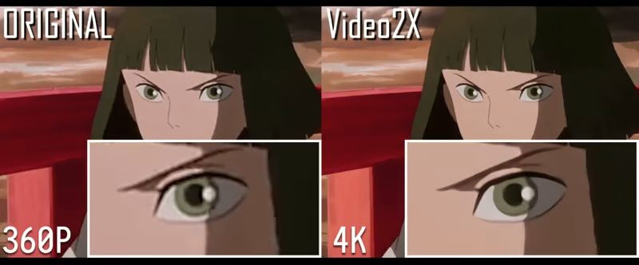

概要 Mission
Anime video super-resolution (SR) is a challenging and increasingly relevant problem, yet the field lacks a dedicated, high-quality benchmark for rigorous evaluation. Existing datasets often re-purpose general-purpose IQA corpora with limited domain coverage or rely on small, manually curated collections insufficient for robust model comparison. We introduce Re-Anime600, a curated benchmark of 600 high-fidelity anime video clips specifically designed for No-Reference Image/Video Quality Assessment (NR-IQA) and super-resolution evaluation.
Sourced from the large-scale Sakuga-42M corpus, Re-Anime600 is constructed through a rigorous multi-metric filtering pipeline, integrating NIQE, MANIQA, and CLIPIQA, to identify clips with native perceptual quality superior to existing SOTA outputs. Each clip is accompanied by extensive spatial, temporal, frequency, and color descriptors, facilitating fine-grained analysis across diverse animation styles and motion regimes.
We provide a comprehensive evaluation of state-of-the-art anime SR models (e.g., Real-ESRGAN, BSRGAN, AnimeSR, APISR), establishing strong baselines across all major NR-IQA axes. Notably, Re-Anime600 provides source material that consistently outperforms uncurated benchmarks, achieving best-in-class scores. We release the dataset and evaluation metadata to promote reproducible research in stylized video restoration.
挑戦 Challenge @ ACCV 2026

A Video Anime Restoration challenge is planned for ACCV 2026 — bringing together the community to push the limits of stylized video super-resolution and quality assessment on Re-Anime600.
Featuring nice prizes for the top teams. Stay tuned! 🏆
Notice. We do not own the copyright of all content in this dataset. Re-Anime600 is released for research purposes only. Copyright holders may contact us to request removal of specific material.